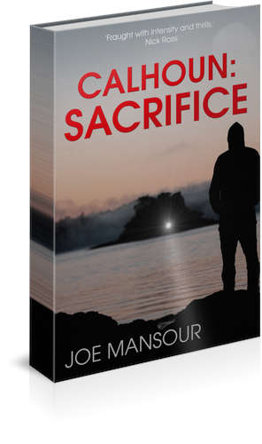
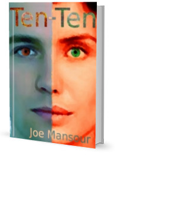

Calhoun: Sacrifice
What would you do to save the life of your child?
Anything, everything.
James Calhoun, soldier until the MOD cutbacks threw him onto civvie street. Back into it as a military contractor, making more money in a week than he had in a year as a squaddie it seemed like the good times would never end. Now divorced and living on benefits in a one room flat, rock bottom after a downward spiral of anger and bitterness, his one solace is the weekly visit with his daughter. He has been told that she will die and only he can save her. But is the price more than he is willing to pay?
Originally published as 'Dark God: Ascending'
Puzzled by magging gash? Click here for a glossary of terms.
Buy on Amazon Buy on ITunes, Nook etc

Ten Minus Ten
Getting it is easy, keeping it is hard
Cam, a woman versed in the rules of the criminal underworld and equipped to deal with it. John, a naive teenager with an unwise crush but the fortitude to see it through. Straddling both their worlds is Marshall, the criminal overlord who will spare no depravity to retrieve what is his. Drop into this Maya, a young street girl struggling to survive and the outcome is an explosive mix of love, loss, betrayal and revenge.